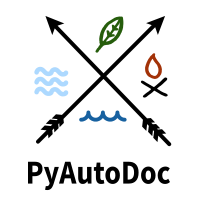

¡Automatiza la documentación de tu proyecto!
Navegación
Changelog
License
generators
i18n
identify
utils
Related Topics
Documentation overview
Búsqueda rápida
Índice
C
|
G
|
I
|
L
|
M
|
P
|
U
C
convert_path() (en el módulo utils.stringify)
G
gen_makefile() (en el módulo generators.makefiles)
gen_window_makefile() (en el módulo generators.makefiles)
generate_config_file() (en el módulo generators.sphinx_config_file)
generate_headline() (en el módulo utils.stringify)
generate_html_config() (en el módulo generators.sphinx_config_file)
generate_index_rst() (en el módulo generators.rst_file)
generate_latex_config() (en el módulo generators.sphinx_config_file)
generate_markdown_rst() (en el módulo generators.rst_file)
generate_mocks_stuff() (en el módulo utils.stringify)
generate_modules_srt() (en el módulo generators.sphinx_structure)
generate_package_leaf_rst() (en el módulo generators.rst_file)
generate_package_not_leaf_rst() (en el módulo generators.rst_file)
generate_structure() (en el módulo generators.sphinx_structure)
generate_sub_headline() (en el módulo utils.stringify)
generate_sub_sub_headline() (en el módulo utils.stringify)
generators.__init__ (módulo)
generators.makefiles (módulo)
generators.rst_file (módulo)
generators.sphinx_config_file (módulo)
generators.sphinx_structure (módulo)
get_abs_path() (en el módulo utils.path)
get_classes() (en el módulo identify.project_structure)
get_folder_name() (en el módulo identify.packages)
get_pyfile_header() (en el módulo utils.stringify)
I
i18n.__init__ (módulo)
i18n.dictionary (módulo)
i18n.exceptions (módulo)
identify.__init__ (módulo)
identify.data (módulo)
identify.packages (módulo)
identify.project_structure (módulo)
identify_structure() (en el módulo identify.project_structure)
instance (atributo de i18n.dictionary.Locale)
is_leaf() (método de identify.data.Module)
is_package() (en el módulo identify.packages)
L
list_to_rst_modules() (en el módulo utils.stringify)
Locale (clase en i18n.dictionary)
LocaleUnsupportedException
M
Module (clase en identify.data)
P
path_leaf() (en el módulo utils.path)
PythonFile (clase en identify.data)
U
utils.__init__ (módulo)
utils.path (módulo)
utils.stringify (módulo)